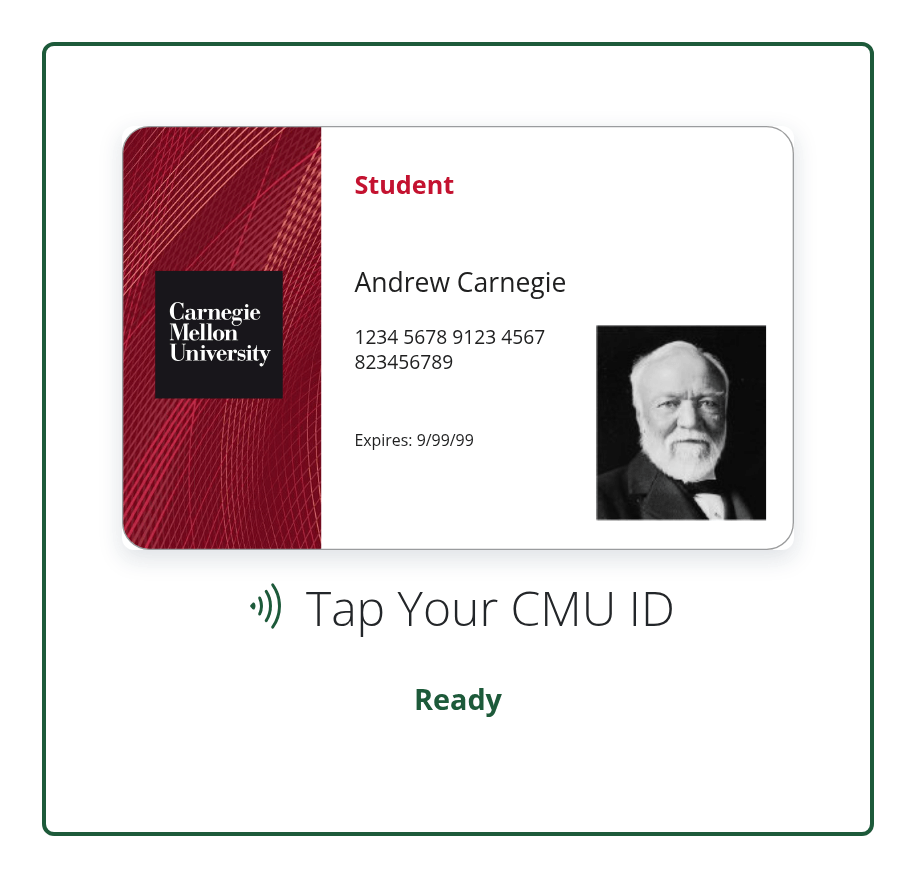

Images and Icons
Unlike placeholder photos, these images are ready for live sites and apps. Link to them from your pages; the addresses won't change.
Bio Placeholder
CMU's gray wordmark placeholder for a staff member without a photo, as on the Web Strategy team page. Staff pages use it at 600 × 750.
https://placemellon.andrew.cmu.edu/600/750?bioExample
Default Profile Picture
Scotty as the signed-in user's picture when they don't have a photo, in the kit's profile picture. One address covers both sizes, small in the roof and larger in the menu. Use it for the signed-in account only, not lists of people.
https://placemellon.andrew.cmu.edu/112?profileExample

Sample ID Card
A sample CMU ID for Andrew Carnegie, for ID tap screens and mockups. It's the card in the kit's ID tap.
https://placemellon.andrew.cmu.edu/images/cmu-id-card.svg
Example

Favicon
CMU's icon for browser tabs, bookmarks and phone home screens comes from cmu.edu. Add these links to your page's head, or start from the Carnegie Mellon Web Kilt's page template, which already has them:
Browser Tab
 Phone Home Screen
Phone Home Screen
<link href="https://www.cmu.edu/favicon.ico" rel="icon">
<link href="https://www.cmu.edu/favicon-152.png" rel="apple-touch-icon-precomposed">
<meta content="#9f0000" name="msapplication-TileColor">
<meta content="https://www.cmu.edu/favicon-144.png" name="msapplication-TileImage">More From University Communications & Marketing
CMU's brand site has the official wordmarks, Scotty illustrations and tartan patterns, with how to use them: